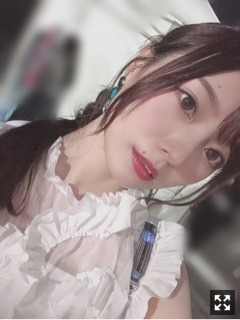
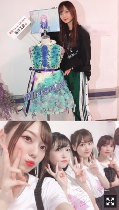
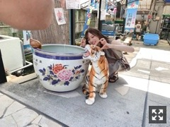

似たようなものを好むらしい
ハイネックがすきです
本格的に寒くなってまいりましたね
私の好きな季節でございます。
あっという間に去っていってしまうから
ちゃんと、味わって過ごします。
ニット、たくさんゲットしております
着たくなりますよね〜。
でも色はほとんどベージュ。
最近はもっぱらベージュ。
黒は着なくなったなあ〜
さて、だいぶ前になってしまいましたが
TGC北九州に出演させて頂きました
福岡へ！
LATO✼CALLEさんステージと、
なんとなんと三度目の
SPECIAL COLLECTIONに、、
有難いです、本当に(；；)幸せです。

テーマは"船上パーティ"。
水色と白のスタイリングでとっても素敵でした。
久美さんと一緒でとっても安心したのです。
沢山お話してくださいました！
癒されました。
緊張もしますが、
楽しいをしっかり感じられるようになりました！
声援やうちわやボードサイリウム、
本当にありがとうございます❁︎
ありがとうございました

素敵なお花まで頂きました(；；)❤︎
空扉MV衣装。
大好きで大切な曲に大好きな衣装です！！幸せです！
とっても楽しかったです︎︎︎︎。
もっとバキバキ踊れるようになりたい。
ダンスをとにかく頑張りたい！！
表現力もしなやかさも、全て、欲しいです
たくさんの愛を受け取りました。
中々会える機会が少ないかもしれないけど
国を越え海を越えこの場所にも私たちに愛をくれる方々が沢山いるのだと思うと、
嬉しくて涙がこぼれそうになりました。
日本から来てくれた方も本当にありがとうございました(；；)
遠くまで、本当に感謝しています。
また、必ず帰ってきます！
謝謝❤︎
先日乃木恋リアルイベントがありました〜！
今回は
「未公開映像大放出〜！」
ということで（笑）
撮り溜めてきた公開する場所の無い動画たちをクイズにして出題しました〜
イベントならではですね。
お見立て会の映像、普段のオフ動画、
セラミュの舞台裏、MV撮影裏側など。
５問出題したのだけど
ヒント出しすぎて全問正解した方めっちゃいた（笑）
メールには送りましたが
最後に１曲歌いました〜。緊張した
このイベント大好き〜！
また次回も楽しみだなあ

B.L.T.さまオフショットです◎
笑ってる、はは
夏休みの課題であった
VRアートを生パフォーマンスしました！
オンエア見て改めて思ったけどめちゃくちゃに手が震えてましたね（笑）
VRアート、
とってもとっても難しくてですね、
中々苦戦したのですが、、
何よりも楽しくって！
気づけばVRに惹き込まれる私がいました。
お忙しい中練習に付き合ってくださった
あいみ先生には感謝の気持ちでいっぱいです。
また出来る機会があればいいなあ(；；)
パフォーマンスもかっこよくて
魅了されてしまいました。素敵。
これからVRアートが、もっともっと普及していくのが楽しみで仕方がないです︎︎︎︎☀︎
鍋が食べたくなりますね。
もつ鍋が食べたくて仕方ありません！
TGCで福岡に行った時に買ったもつ鍋
まだ食べれていません。うう。
お仕事終わりでいつもと髪が違う梅澤。
では
今日はこの辺で。
おやすみなさい
毎日お仕事に苦戦しながらも楽しんでおります！
色んなことに目を向け観察することも、
どんなことへも覚悟を決めて進んでいかなければならないことも、
今感じる気持ち全部きっと、
何年後かの私のためになると信じています。☀︎
私は考えすぎるとすぐ夢に出てきます（笑）
Original：https://www.nogizaka46.com/s/n46/diary/detail/53495?ima=4941&cd=MEMBER